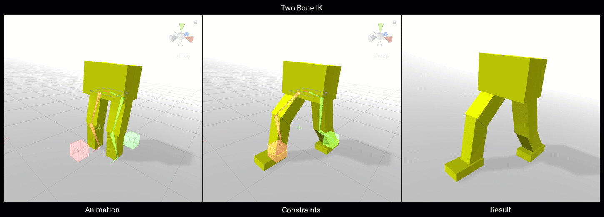
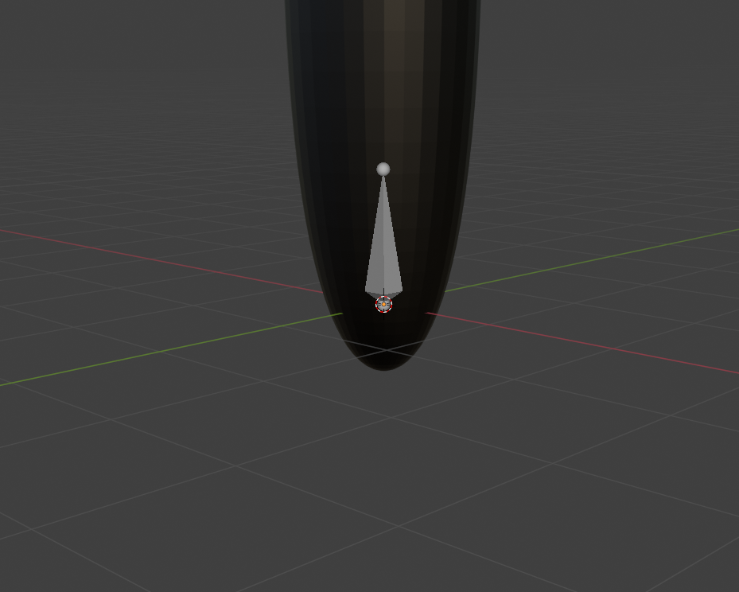
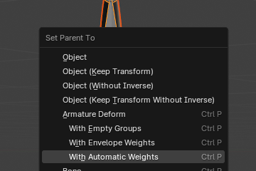
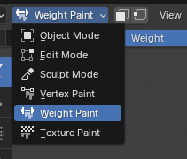

Animation Rigging in Unity
Animation rigging in Unity involves setting up a skeleton (rig) for a character or object, which consists of bones and joints. This rig allows animators to create and control movement. Key components include:
-
Skeleton/Bones:
Hierarchical structure of bones and joints.
-
Skinned Mesh Renderer:
Component that renders a deformable mesh.
-
Constraints:
Rules that dictate how bones move (e.g., IK constraints for realistic limb movement).
Using Unity's Animation Rigging package, developers can create complex animations by defining these bones, joints, and constraints, facilitating more dynamic and realistic character movements.
Contraint Components
Blend
Function: Blends the transformations of multiple sources (position, rotation, scale) to a single object.
Use Case: Smoothly transitioning an object between different states or animations.

Chain IK
Function: Controls a chain of bones to follow a target position, typically for limbs.
Use Case: Creating natural limb movements, such as a character’s arm reaching for an object.

Damped
Function: Applies a damping effect to an object's transformation, smoothing out sudden movements.
Use Case: Reducing jitter or oscillations in animations, such as camera shake or soft body dynamics.

Multi-Aim
Function: Orients an object to aim at multiple targets, blending between them based on weights.
Use Case: Ensuring an object (like a head or eye) smoothly tracks multiple points of interest.

Multi-Parent
Function: Allows an object to inherit transformations from multiple parent objects.
Use Case: Complex parenting setups where an object needs to follow multiple influences, such as holding an object with both hands.

Multi-Position
Function: Constrains an object’s position to multiple targets, blending their influence.
Use Case: Positioning an object relative to several control points, useful in multi-character interactions.
Multi-Referential
Function: Switches an object’s reference between different targets seamlessly.
Use Case: Changing the parent or reference of an object dynamically, such as switching which hand holds an object.

Multi-Rotation
Function: Blends the rotational influence of multiple targets on an object.
Use Case: Smoothing out rotational transitions between different animations or control points.

Override
Function: Overrides the transformation of an object with specified values or influences.
Use Case: Temporarily changing an object’s transformation for specific actions or states.

Twist Chain
Function: Distributes a twist along a chain of bones evenly.
Use Case: Creating natural twisting motions in body parts like the forearm or spine.

Twist Correction
Function: Corrects unwanted twisting in a bone, ensuring proper deformation.
Use Case: Maintaining the correct shape of a mesh during complex rotations, such as twisting an arm.

Two Bone IK
Function: Controls two connected bones (like upper and lower arm) to reach a target position.
Use Case: Animating joints such as elbows and knees with natural bending and reaching motions.

Blender Setup
Create a shape
Create the desired shape you want to animate.
Add Armature
Press shift+a then click on Armature to add the base bone.

Change Viewport display (recommended)
To see the bone structure easier, go to Data>Viewport Display, then check the In Front box.
Build the armature
With the base bone selected in object mode, go into edit mode then you can:
Press E to create a new bone at the selected bone
Press G to move and rotate the selected mode
Connect the Object with the Armature
Shift click the armature THEN the object, then press CNTRL/CMMD+P, finally select "With Automatic Weights"

Weight Paint (Optional)
To improve how the bones bend the objects, you customize how each bone affects the mesh. To do this select the mesh/object in object mode then switch to Weight Paint. Here you can
get wieght from https://docs.blender.org/manual/en/latest/sculpt_paint/weight_paint/introduction.html

Export
Export the project as a .fbx file and place it in your Unity assets folder.